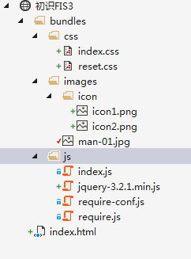
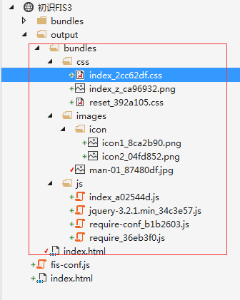

FIS3的构建不会修改源码，而是通过用户设置，将构建的结果输出到指定的目录
这篇章节只是学习笔记，讲解的内容粗略了点。
具体详细内容请参照FIS官方文档进行学习使用。
1. 配置文件
默认配置文件为根目录的 fis-conf.js，FIS3 编译的整个流程都是通过配置来控制的。固化了构建流程，让工程构建变得简单。
配置语法：
fis.match(selector, props);
参数一：文件匹配选择器，关于selector的语法请参考Glob 说明
参数二：编译规则属性对象，参考更多属性
粗滤过一下就行了，后面常用的属性使用多了自然也就知道了。
1.1. 规则覆盖
当两条规则同时命中文件将会被覆盖，如：
// A
fis.match('*', {
release: '/dist/$0'
});
// B
fis.match('test.js', {
useHash: true,
release: '/dist/js/$0'
})
那么test.js 分配到的属性
{
useHash: true, // B
release: '/dist/js/$0' // B
}
1.2. fis.media()
fis.media() 接口提供多种状态功能，比如有些配置是仅供开发环境下使用，有些则是仅供生产环境使用的。
又或者：
fis.media('rd').match('*', {
deploy: fis.plugin('http-push', {
receiver: 'http://remote-rd-host/receiver.php'
})
});
fis.media('qa').match('*', {
deploy: fis.plugin('http-push', {
receiver: 'http://remote-qa-host/receiver.php'
})
});
- fis3 release rd push 到 RD 的远端机器上
- fis3 release qa push 到 QA 的远端机器上
media dev 已经被占用，默认情况下不加
参数时默认为 dev
当熟悉了fis-conf.js的语法规则，以及掌握了它的两个参数属性之后，我们先通过一个例子来认识FIS3。
2. 构建项目
项目目录结构：

index.html:
<!DOCTYPE html>
<html>
<head>
<meta http-equiv="Content-Type" content="text/html; charset=utf-8" />
<title></title>
<meta charset="utf-8" />
<!--styles-->
<link href="bundles/css/reset.css" rel="stylesheet" />
<link href="bundles/css/index.css" rel="stylesheet" />
<!--styles-->
</head>
<body>
<div class="site-nav">
<a href="#" class="site-nav-icon site-nav-icon-sign">单人游戏</a>
<a href="#" class="site-nav-icon site-nav-icon-more">多人游戏</a>
</div>
<img src="bundles/images/man-01.jpg" />
<!--scripts-->
<script src="bundles/js/require.js"></script>
<script src="bundles/js/require-conf.js"></script>
<script>
require(["index"]);
</script>
<!--scripts-->
</body>
</html>
index.css:
.site-nav {
height: 35px;
background-color: #f5f5f5;
border-bottom: 1px solid #eee;
line-height: 35px;
padding-left: 100px;
}
.site-nav-icon-sign {
/*要生成雪碧图，后面跟上?__sprite*/
background: url('../images/icon/icon1.png?__sprite') no-repeat left center;
padding: 10px 35px;
padding-right: 10px;
}
.site-nav-icon-more {
background: url('../images/icon/icon2.png?__sprite') no-repeat left center;
padding: 10px 45px;
}
index.js:
define(["jquery"], function ($) {
$(".site-nav-icon").click(function () {
alert($(this).text());
});
});
其他的源码文件可以查看对应的源码,对象源码如何查看在博客前言中提到过。
当我们正常开发阶段写好源码样式之后，此时需要在项目根目录创建fis-conf.js文件，并编写配置。
fis-conf.js:
//文件携带 md5 戳
fis.match("*.{png,jpg,css,js}", {
useHash:true
});
// 启用 fis-spriter-csssprites 插件
fis.match('::package', {
spriter: fis.plugin('csssprites')
});
fis.match("*.js", {
// fis-optimizer-uglify-js 插件进行压缩，已内置
optimizer: fis.plugin("uglify-js")
});
// 对 CSS 进行图片合并
fis.match('*.css', {
// 给匹配到的文件分配属性 `useSprite`
useSprite: true
});
fis.match('*.css', {
// fis-optimizer-clean-css 插件进行压缩，已内置
optimizer: fis.plugin('clean-css')
});
fis.match('*.png', {
// fis-optimizer-png-compressor 插件进行压缩，已内置
optimizer: fis.plugin('png-compressor')
});
配置文件写好后，执行：
fis3 release -d ./output
这时候，结构如下图：

3. 总结
这节通过配置FIS3的fis-conf.js实现了：
- css、js、png、jpg等资源压缩
- 雪碧图的合并
- 文件指纹